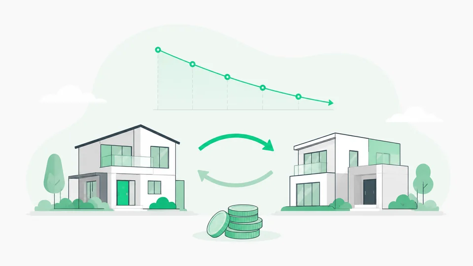

주담대·전세 갈아타기(대환) 실익 계산기
금리만 낮다고 갈아타면 손해일 수 있습니다. 중도상환수수료와 인지세·설정비까지 넣어 몇 개월 만에 본전을 넘기는지, 남은 기간 안에 회수되는지를 계산합니다.

대환(갈아타기) 계산, 무엇을 비교해야 하나
대환은 간단히 말해 남아 있는 대출을 다른 금리·다른 조건의 대출로 바꿔치기하는 것입니다. 판단 기준은 딱 하나입니다. 바꿔서 아끼는 이자가, 바꾸는 데 드는 비용보다 큰가. 금리차가 1%p씩 벌어지면 대부분 이득이지만, 금리차가 0.2~0.3%p 수준이면 중도상환수수료와 부대비용이 절감액을 통째로 먹는 경우가 흔합니다.
이 계산기는 지금 남은 기간을 기준으로 두 가지 상환 스케줄을 각각 끝까지 굴려 총이자를 구하고, 여기서 갈아타기 비용을 뺍니다. 결과는 세 가지 숫자로 요약됩니다.
- 월 상환액 차이 — 갈아탄 뒤 매달 얼마나 덜(또는 더) 내는지
- 총 이자 절감액 — 두 대출을 만기까지 갚았을 때 이자 총액의 차이
- 손익분기 개월 수 — 지출한 비용을 월 절감액으로 회수하는 데 걸리는 기간
비용은 세 덩어리로 나눠 봅니다
갈아탈 때 드는 돈은 금리와 별개로 나갑니다. 이걸 빼고 계산하면 실제보다 이득이 크게 보입니다.
| 비용 항목 | 어떻게 정해지나 | 계산기에 넣는 값 |
|---|---|---|
| 기존 대출 중도상환수수료 | 중도상환원금 × 수수료율 × (잔존일수 ÷ 대출기간). 대출기간이 3년을 넘으면 3년째 되는 날을 만기로 보고 계산하는 것이 일반적이라, 계약 후 3년이 지나면 통상 면제됩니다. | 은행 공시 수수료율(%), 필요하면 잔존일수 비율 |
| 인지세 | 대출약정서에 붙는 국세. 5천만원 이하는 비과세, 5천만원 초과~1억원 이하 7만원, 1억원 초과~10억원 이하 15만원이고 은행과 차주가 절반씩 부담합니다. | 기타비용에 포함(1억원 대출이면 약 7만 5천원) |
| 근저당 설정·말소, 감정평가, 보증료 차액 | 담보 설정·말소 등기 비용은 채권최고액과 법무사 보수에 따라 달라지고, 전세대출은 보증기관(HUG·HF·SGI)을 바꾸면 보증료율이 달라집니다. | 은행·보증기관 안내 금액을 기타비용에 합산 |
손익분기 개월 수 공식
손익분기 개월 수는 총비용 ÷ 월 상환액 차이입니다. 예를 들어 총비용이 240만원이고 매달 10만원씩 덜 낸다면 24개월, 즉 2년 뒤에 본전을 넘습니다. 남은 기간이 3년이라면 그 뒤 1년은 순이익이고, 남은 기간이 1년 6개월이라면 회수하지 못하고 끝납니다.
여기서 한 가지 주의할 점. 월 상환액 차이는 상환 방식에 따라 의미가 달라집니다. 원리금균등은 매달 같은 금액이라 비교가 쉽지만, 원금균등은 첫 달이 가장 많고 갈수록 줄어들며, 만기일시(전세대출에서 흔함)는 이자만 내다가 만기에 원금을 한 번에 갚습니다. 이 계산기는 선택한 방식을 그대로 시뮬레이션해 첫 달 납입액과 월 평균 납입액을 함께 보여 줍니다.
이런 경우 특히 계산해 볼 만합니다
- 주담대 금리차가 0.5%p 이상 벌어졌을 때 — 잔액이 크면 월 차이가 수십만원까지 벌어집니다.
- 전세대출 만기를 앞두고 보증기관·은행을 바꿀 때 — 만기일시 상환 구조라 총이자 차이가 곧 절감액입니다.
- 고정금리로 바꾸면서 금리도 낮출 때 — 절감액에 '금리 변동 위험을 없앤 값'이 더해집니다. 다만 고정금리 상품은 중도상환수수료율이 더 높은 경우가 있습니다.
- 대환대출 인프라(온라인·원스톱)로 견적을 받았을 때 — 실제 적용 금리와 한도를 확인한 뒤 이 계산기에 넣으면 상담 전에 대략적인 결론을 잡을 수 있습니다.
대환 실익 계산기
기존 대출과 갈아탈 대출을 만기까지 각각 갚아 보며 총이자를 비교합니다. 수수료는 최대치로 잡혀 있으니, 실제보다 불리하게 나오는 것이 정상입니다.
지금 대출
금리는 체증식·변동금리라면 현재 적용 금리를 넣으세요. 남은 기간은 만기일까지 개월 수입니다(예: 2년 6개월 → 30).
갈아탈 대출
기간을 늘리면 월 부담은 줄지만 총이자는 늘어날 수 있습니다. 계산기가 그 차이까지 반영합니다.
갈아타는 비용
정확한 수수료를 알고 있나요?잔존일수 비례로 실제 부담액을 낮춰 계산
예: 3년 만기 대출을 1년 남기고 갚으면 약 33%. 100%로 두면 수수료율 전액, 즉 가장 불리한 경우입니다.
인지세는 1억원 초과~10억원 이하 대출이면 총 15만원 중 차주 부담 7만 5천원입니다. 근저당 말소·설정비는 은행 안내를 확인하세요.
계산 결과
상세 비교표 보기
갈아타기 전에 꼭 확인하세요
- ①금리차가 0.2~0.3%p 안쪽이면 수수료·부대비용 때문에 손해인 경우가 많습니다. 계산기 판정이 '손해'로 나오면 그대로 두는 편이 낫습니다.
- ②갈아타기는 새 대출 심사입니다. 소득·기존 대출·DSR 규제에 따라 한도가 줄거나 거절될 수 있으니, 금리표보다 '내가 얼마까지 빌릴 수 있는지'를 먼저 확인하세요.
- ③변동금리에서 고정금리로 옮기면 금리차가 작아도 위험을 없앤 값이 있습니다. 숫자만으로는 안 잡히는 부분입니다.
- ④전세대출은 보증기관을 바꾸면 보증료율이 달라집니다. 보증료 차액을 기타비용에 넣어야 비교가 맞습니다.
- ⑤숨은 비용: 근저당 말소비용·감정평가·중도금 환급 이자 등이 있습니다. 은행에 "총 부대비용이 얼마인지" 서면으로 물어보세요.
계산 기준·한계
계산 방식 — 잔액에 대해 선택한 상환 방식으로 매달 이자를 계산해 만기까지 시뮬레이션합니다. 원리금균등은 매달 납입액을 원 단위로 반올림하며, 마지막 달에 잔액을 정리합니다.
중도상환수수료 — 잔액 × 수수료율 × 적용 비율로 계산합니다. 실제 산식은 중도상환원금 × 수수료율 × (잔존일수 ÷ 대출기간)이고, 대출기간이 3년을 초과하면 3년째 되는 날을 만기로 간주합니다(2025년 1월 제도개선 이후 은행 공시 기준).
포함하지 않은 것 — 금리 변동, 중도 일부 상환, 거치기간, 대출 부대수수료(취급수수료), 보증료의 연도별 변동, 세금 효과(이자비용 필요경비)는 반영하지 않았습니다. 실제 조건은 은행 상품설명서를 기준으로 확인하세요.
주의 — 이 계산기는 참고용이며 금융 자문이 아닙니다. 대출 실행 전 은행의 실질유효금리와 총 부대비용 안내를 확인하시기 바랍니다.
계산 결과는 예상치이며, 실제 금리·수수료·한도는 금융기관 심사 결과에 따라 달라집니다.
결과 읽는 법 — 판정 네 가지
계산기는 결론을 네 가지로 나눠 보여 줍니다. 숫자가 좋아도 판정이 나쁠 수 있으니, 판정 문구를 먼저 보고 세부 숫자를 확인하세요.
| 판정 | 조건 | 해석 |
|---|---|---|
| 갈아타는 게 유리 | 순절감 > 0, 손익분기 ≤ 남은 기간의 60% | 비용을 회수하고도 남는 기간이 충분합니다. 대체로 진행할 만합니다. |
| 아슬아슬 | 순절감 > 0, 손익분기 > 남은 기간의 60% | 이득은 맞지만 여유가 적습니다. 금리 변동·중도 상환 계획이 생기면 이득이 사라질 수 있습니다. |
| 회수 못 함 | 순절감 > 0이지만 손익분기 > 남은 기간 | 만기까지 갚아도 비용을 다 못 건집니다. 기간을 늘려 회수 기간을 확보할 수 있는지 검토하세요. |
| 손해 / 이득 없음 | 순절감 ≤ 0 또는 금리차 ≤ 0 | 지금 대출을 그대로 두는 편이 낫습니다. 금리가 더 낮아지거나 수수료 면제 시점이 오면 다시 계산하세요. |
은행 가기 전 준비할 숫자 다섯 가지
- 1남은 원금과 만기일은행 앱 '대출 조회'에서 확인합니다. 상환 예정일이 아니라 만기일 기준으로 남은 개월을 세세요.
- 2내 대출의 중도상환수수료율대출 약정서와 은행 공시에서 확인합니다. 2025년 1월 제도개선 이후 취급분과 그 이전 취급분의 요율이 크게 다릅니다.
- 3대출 실행일실행일로부터 3년이 지났는지가 수수료 면제를 가릅니다. 갈아타기로 새 계약을 맺으면 기존·신규 계약 기간을 합산해 3년을 넘기면 수수료를 부과할 수 없도록 되어 있는데, 적용 여부는 은행에 직접 확인하는 편이 정확합니다.
- 4갈아탈 상품의 실제 금리금리표의 최저금리가 아니라 내 조건(소득·담보·신용)에 적용되는 금리를 받아 적습니다. 우대조건이 '급여이체 3개월 유지' 같은 것이면 그 조건이 깨질 때 금리가 오른다는 점도 함께 봅니다.
- 5총 부대비용인지세, 근저당 설정·말소, 감정평가, 보증료, 취급수수료를 모두 더한 금액을 은행에 물어봅니다. 이 값이 기타비용 입력칸에 들어갑니다.
숫자로 보는 세 가지 예시
아래는 설명을 위한 가정입니다. 실제 금리·수수료와 다르니 참고만 하세요.
| 갈아탈 금리 | 금리차 | 총이자 절감 | 총비용 | 순절감 | 손익분기 |
|---|---|---|---|---|---|
| 기존 4.6% → 3.6% | 1.0%p | 약 3,810만원 | 약 240만원 | 약 3,570만원 | 약 16개월 |
| 기존 4.6% → 4.1% | 0.5%p | 약 1,930만원 | 약 240만원 | 약 1,690만원 | 약 30개월 |
| 기존 4.6% → 4.4% | 0.2%p | 약 780만원 | 약 240만원 | 약 540만원 | 약 75개월 |
같은 3억원이라도 금리차가 0.2%p로 줄면 손익분기가 6년을 넘어갑니다. 이때는 앞으로 그 대출을 6년 이상 들고 있을지가 결정적입니다. 잔액이 크고 기간이 길수록 작은 금리차도 의미가 커지고, 반대로 만기가 코앞이면 큰 금리차도 무의미해질 수 있습니다.
자주 묻는 질문
Q중도상환수수료는 무조건 내나요?▾
아닙니다. 대출계약 성립일로부터 3년이 지난 뒤 갚으면 법령상 예외가 없는 한 부과할 수 없습니다. 또 갈아타기처럼 기존 계약을 바꿔 새 계약을 맺는 경우, 기존·신규 계약의 유지기간을 합쳐 3년을 넘겼는데도 수수료를 부과하는 것은 금지되어 있습니다. 다만 적용 판단은 상품·약정에 따라 달라질 수 있어 은행에 확인하는 것이 가장 정확합니다.
Q금리차가 몇 %p면 갈아탈 만한가요?▾
정해진 기준은 없고 잔액과 남은 기간이 결정합니다. 잔액 3억원·남은 20년 기준으로는 0.5%p만 벌어져도 1,900만원 안팎 차이가 나고, 잔액 5천만원·남은 2년이라면 1%p가 벌어져도 겨우 3만 5천원이 남을 정도입니다. 금리차보다 손익분기 개월 수와 남은 기간의 비교를 먼저 보세요.
Q기간을 늘려서 갈아타면 이득인가요?▾
월 부담은 줄지만 총이자는 늘어날 수 있습니다. 계산기에서 '갈아탈 기간'을 기존보다 길게 넣으면 총이자 절감액이 줄거나 마이너스가 되는 것을 볼 수 있습니다. 현금흐름이 급해서 기간을 늘려야 한다면, 그것은 '이자 절감'이 아니라 '월 부담 조정'이 목적이라는 점을 분명히 하고 결정하세요.
Q전세대출도 갈아탈 수 있나요?▾
가능합니다. 전세대출은 보통 만기일시 상환이라 이자만 내다가 만기에 원금을 갚습니다. 이 계산기에서 상환 방식을 '만기일시'로 바꾸면 이 구조로 계산됩니다. 보증기관(HUG·HF·SGI서울보증)을 바꾸면 보증료율이 달라지므로, 보증료 차액을 기타비용에 넣어야 실제 비교가 됩니다.
Q대환하면 한도가 줄어들 수 있나요?▾
그럴 수 있습니다. 갈아타기는 새 대출 심사이므로 소득·신용·기존 부채에 따라 한도가 달라지고, 스트레스 DSR 같은 규제가 적용되면 같은 잔액이라도 빌릴 수 있는 금액이 줄어들 수 있습니다. 잔액 전액을 옮기지 못하면 차액을 따로 마련해야 하므로, 금리보다 한도를 먼저 확인하는 것이 순서입니다.
Q이 계산기에 개인정보가 저장되나요?▾
아니요. 모든 계산은 브라우저 안에서만 이루어지고 서버로 전송되거나 저장되지 않습니다. 페이지를 새로 고치면 입력값은 사라집니다.
참고한 기준
- 중도상환수수료 산식·3년 기준: 은행 공시(2026년 1월 이후 취급분 요율은 은행별 0.55~0.95% 수준) 및 2025년 1월 금융위원회 제도개선(실비용 범위 내 부과)
- 인지세: 인지세법상 구간별 세액, 은행과 50% 부담
- 상환 방식별 이자 계산: 원리금균등·원금균등·만기일시 표준 산식
※ 이 페이지의 내용은 일반적인 정보이며, 금융 상품 가입 권유나 자문이 아닙니다. 금리와 수수료는 수시로 바뀌므로 실행 직전에 금융기관 공시를 확인하세요.